SHERSHAAH
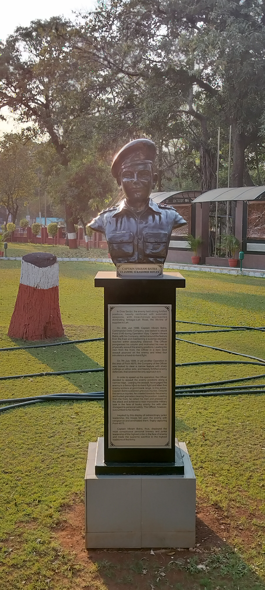
Capt. Vikram Batra. 24 years old. Smiling in the face of impossible odds.
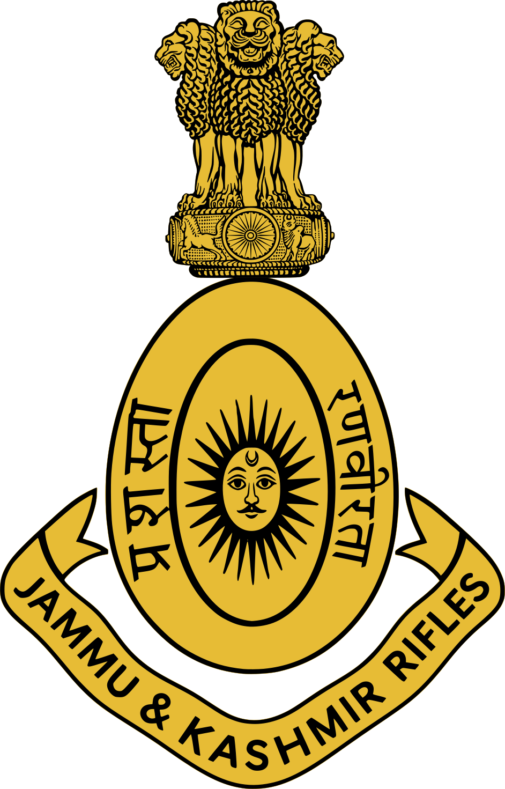
"Either I will come back after hoisting the Tricolour, or I will come back wrapped in it. But I will be back for sure."
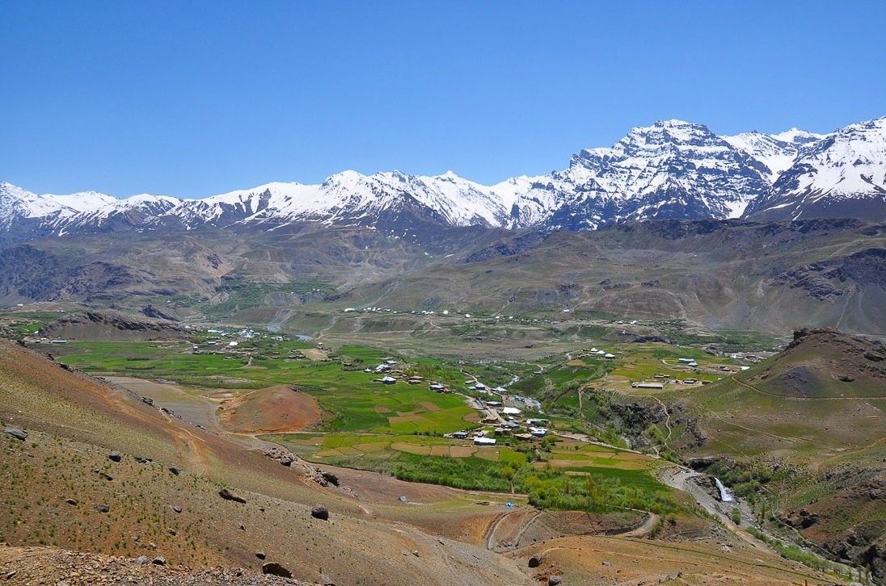
Sheer vertical rock walls. Zero cover. Temperature: -10°C.
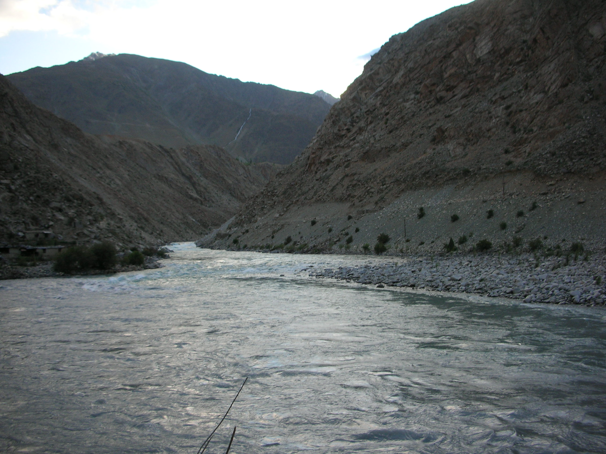
Pakistani snipers and machine guns pinned down every single Indian troop movement from this icy fortress.
"The enemy held the peaks with direct line of sight to NH-1A. Our jawans had to climb 80-degree near-vertical cliffs at night in pitch blackness, carrying 25 kg rucksacks under direct machine gun fire. Every foot of ground was paid for in blood."
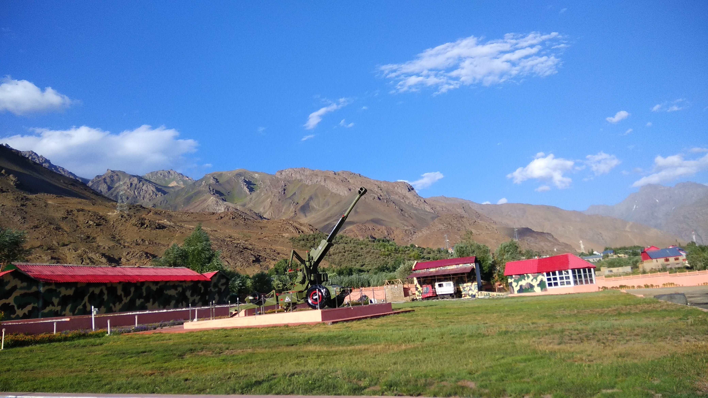
Guns barrel-elevated to 70 degrees. Direct firing against sheer mountain bunkers.
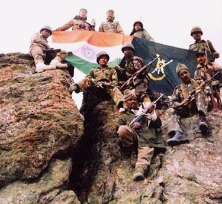
The mountains shook like earthquakes. 250,000 artillery shells pulverizing fortified stone bunkers.
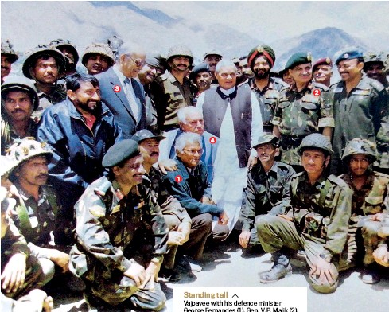
Capt. Vikram Batra opted to climb the sheer eastern cliff face that the enemy thought was impassable. He and his men climbed hand-over-hand in pitch darkness, completely bypassing enemy machine gun cones.
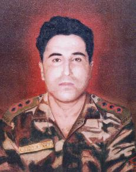
At 0330 hrs on 20 June 1999, Batra stormed the top bunker with hand grenades and cleared it single-handedly.
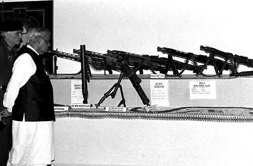
Heavy machine guns, rocket launchers, and sniper rifles captured. Zero casualties in Batra's company.
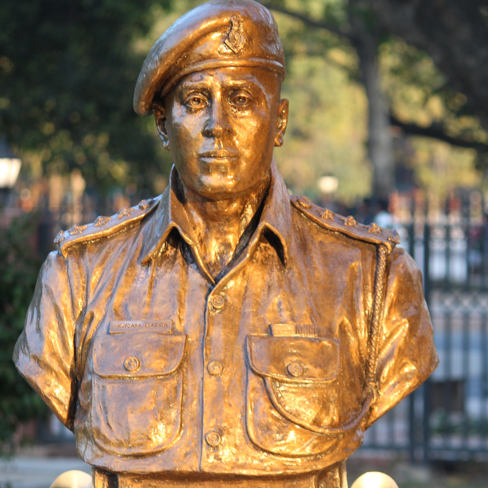
Sculpted in bronze: charging forward, rifle raised, fear banished forever.
"TU PEECHE HAT, TERE BIWI-BACCHE HAIN..."
During the ferocious hand-to-hand battle for Point 4875, Vikram’s junior officer, Lt. Naveen Anjum, was hit in both legs by machine-gun fire and lay bleeding in the open.
Batra rushed out into the crossfire to pull Naveen into cover. When Naveen protested, Batra gently pushed him back and whispered:
"Tu peeche hat, tere biwi-bacche hain... I don't even have a family yet."
Moments after dragging Naveen to safety, a sniper bullet pierced Vikram’s chest, followed by a splinter from an RPG.
He fell facing the enemy. His last breath: "JAI MATA DI!"
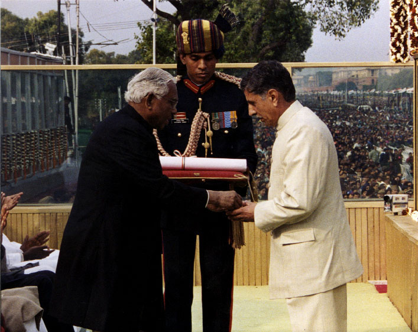
A grieving yet proud father receiving India's highest wartime gallantry medal.
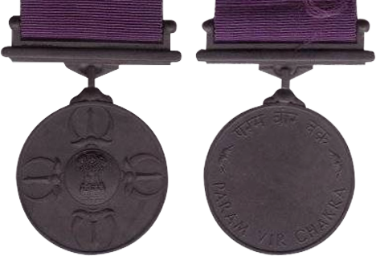
PARAM VIR CHAKRA
"Wheel of the Ultimate Brave"His college sweetheart, Dimple Cheema, chose to never marry anyone else. For over two decades, she has lived alone with Vikram's memory.
"When you love someone so deeply, that love never dies. He lived for 24 years, but lived a life people can only dream of."
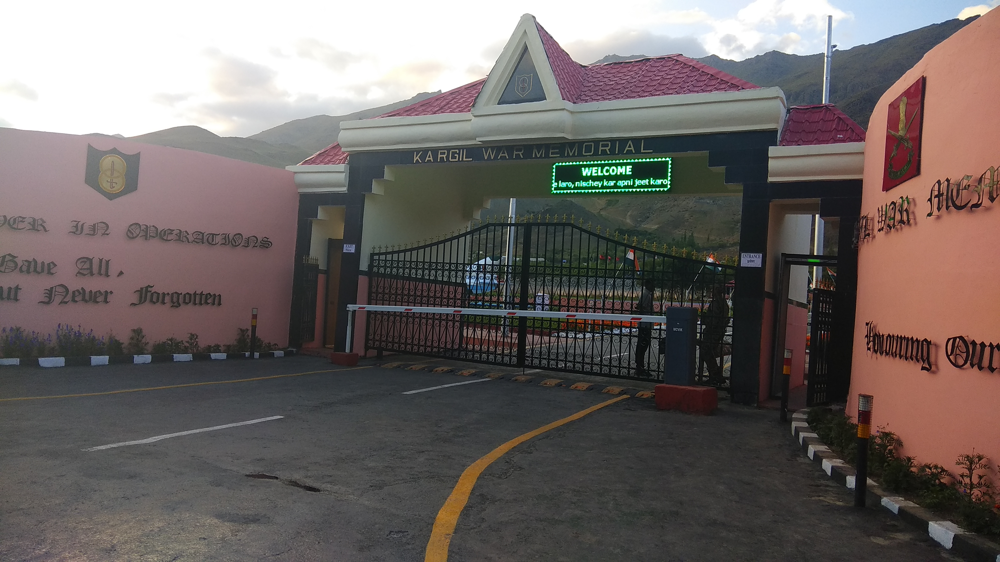
The pathway honoring the 527 soldiers who made the supreme sacrifice.
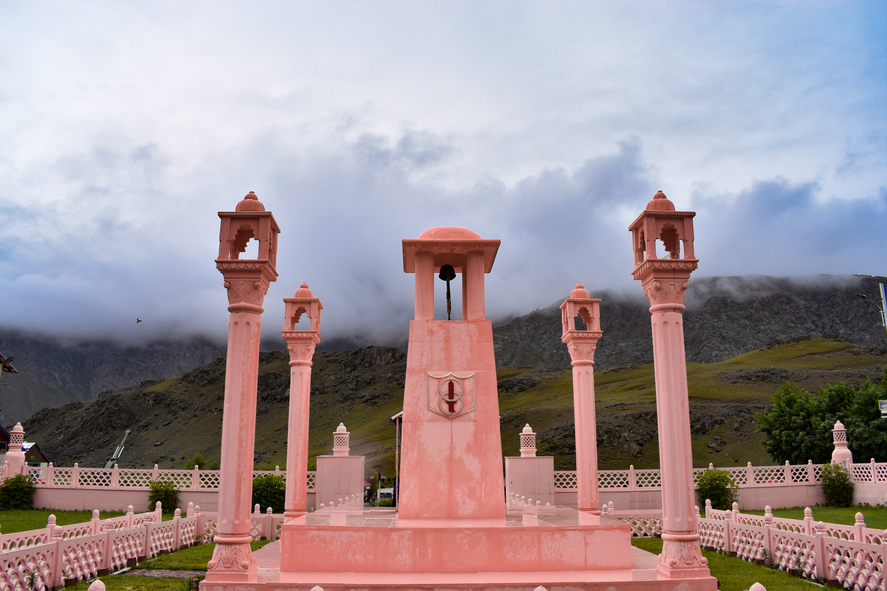
"For your tomorrow, we gave our today."
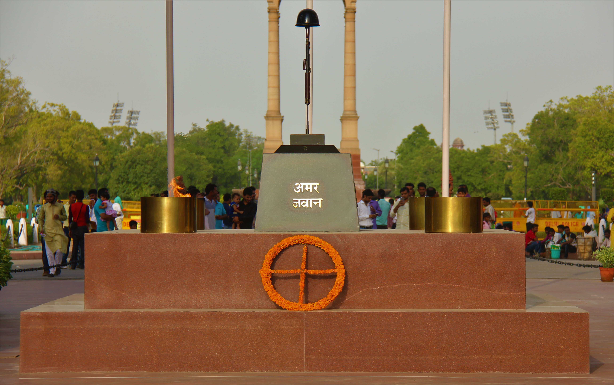
A soldier never dies until he is forgotten. We will never forget.
"WHEN YOU GO HOME,
TELL THEM OF US AND SAY,
FOR YOUR TOMORROW,
WE GAVE OUR TODAY."
STAND TO ATTENTION. SALUTE CAPTAIN VIKRAM BATRA.
Every click logs a live salute from a proud citizen to Captain Batra and the braves of Kargil.
ARCHIVAL PHOTO REPOSITORY // ALL 15 VERIFIED HISTORIC MEDIA
Click any photograph to inspect in full-resolution with field archival coordinates.